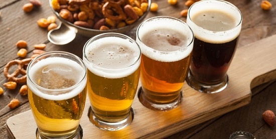

La cerveza sin alcohol, si tiene alcohol

No es posible que la cerveza no tenga nada de alcohol, pero si hay algunas con muy bajas
cantidades de alcohol, de ahí que haya distintos tipos de graduación y que la legislación
los contemples.
Se considera la cerveza sin alcohol como aquella que tiene una cantidad menor a 1 por 100
en volumen de alcohol. Por ejemplo
- Cerveza 0.0: Volumen de alcohol entre un 0.01% y un 0.07%
- Cerveza sin alcohol: volumen de alcohol debe ser menor del 0.9%
- Cerveza "normal": mas de 0.9%
Cada país tiene su propia regulación para etiquetar cada tipo de cerveza.